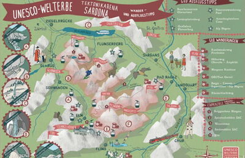
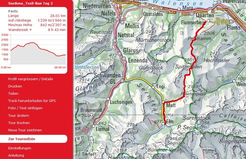
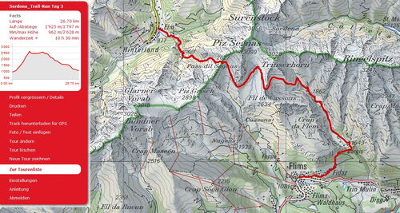

Erlebnislauf_Sardona
Filzbach,Flumserberg,Elm,Flims
Fotos von drei eindrücklichen Tagen im Sardonagebiet hier (du kannst deine Fotos auch hochladen zum teilen)
zur Vorstellung Welterbe Tektonik Sardona Weg auf Youtube
Flyer Erlebnislauf Sardona
Flyer Erlebnislauf Sardonavom 31. August - 2. September

Wir erleben die Tektonikarena Sardona bei drei eindrücklichen Trailtouren. In Gruppen nach Stärkeklassen laufen wir in drei Tagen von Filzbach über Murgsee nach Flumserberg, weiter über Spitzmeilen nach Elm, dann über Segnaspass nach Bargis und schliesslich nach Flims.
Trailrunning im Wohlfühlbereich. Das Tempo passen wir dem Gelände an und geniessen dabei die schöne Landschaft. Wir haben auch Zeit um Pausen einzulegen. Ist das Gelände eben oder sogar abfallend so sind wir im Laufschritt unterwegs. Steilere Aufwärtspassagen werden auch in zügigem Wanderschritt bewältigt.
Nebst eindrücklichen alpinen Trails erfahren wir interessantes von GeoGuides über Geologie und wissenswertes der Tektonikarena Sardona. Bei der Streckenbesprechung erfahren wir interessantes über die Tektonik Arena Sardona und was es auf der folgenden Tour sehenswertes zu bestaunen gibt. Am Freitag direkt vor dem Start und für Samstag und Sonntag jeweis am Vorabend erklärt von fachkundigen GeoGuides.
Übernachten werden wir am Freitag in Hotels am Flumserberg/ Tannenboden und am Samstag in Elm. Jeweils inkl. Nachtessen und Frühstück. Auch für eine Verpflegung nach jeder Etappe ist gesorgt, ebenfalls eine Zwischenverpflegung unterwegs pro Etappe. Gepäcktransporte von Etappenort zu Etappenort ist organisiert
Ein Gesamtpaket aller Leistungen wird dir angeboten und du kannst dich sorglos auf den Trails vergnügen.
Freitag 31. August

Strecke Tag 1: 30 Km +2300 hm/-1930 hm - zur Strecke auf Schweiz Mobil
Nach dem ersten Aufstieg von Filzbach nach Talalp führt der Trail runter zum Talalpsee und dann hoch zum Mürtschenfurggel, bald erreichen wir die Murgseen. Über Wasserböden gehts zum Chamm und weiter zum hösten Punkt der heutigen Tour zum Erdisgulmen, nun erreichen wir das Skigebiet Flumserberg. Runter gehts über Seeben bei den drei Seen vorbei. Das Tagesziel erreichen wir bei Tannenboden wo bereits das verdiente z'Vieri bereit ist.
Zeitbedarf ca. 5 - 7 Std. Zum Bericht der Erkundungstour des Leiterteams am 14. Juli 2018
Samstag 01. September

Strecke Tag 2: 28 Km +1200 hm/-1600 hm - zur Strecke auf Schweiz Mobil
Der zweite Tag beginnt mit dem Aufstieg zum Maschgenkamm mit wunderbaren Aussichten, weiter führt uns der Weg über Fursch und hoch zur Spitzmeilenhütte SAC, nochmals hoch über den Schönbühlfurggel und dann gehts runter ins Charauchtal mit Winkelhütten, Unterstafel und em Chrauchbach folgend bis nach Matt im Sernftal, von hier ist nicht mehr weit bis Elm. Fotos von der Erkundungstour des Leiterteams vom 11./12. August
Zeitbedarf 5-7 Std.
Sonntag, 02. September

Strecke Tag 3: 27 Km +1900 hm/-1700 hm - zur Strecke auf Schweiz Mobil
Der dritte Tag führt uns steil hoch zum Segnespass nahe dem Martinsloch und den Tschingelhörner. Über La Siala untehlab des Piz Segnas folgen wir dem Wanderweg bis zur Aua da Mulins, dem Wasserlauf folgend erreichen wir Bargis unterhlab des Flimserstein. Weiter nach Fidaz bis nach Flims zum Ziel des dreitägigen Erlebnislaufes. Fotos von der Erkundungstour des Leiterteams vom 11./12. August
Zeitberdarf 5-7 Std.
Streckenänderungen vorbehalten
Leistungen
Folgende Leistungen sind im Teilnehmerbeitrag inbegriffen:
- Fahrt mit Postauto ab Ziegelbrücke zum Startpunkt.
- Teilnahme bei Trailrunning in Gruppen mit ortskundigen Laufleitern nach Stärkeklassen ohne Zeitmessung.
- Wissenswerte Informationen über die Tektonikarena von Geoguides
- Übernachtungen im Hotel Flumserberg und Elm mit Nachtessen und Frühstück
- Eine Zwischenverpflegung unterwegs mit Getränk pro Etappe
- Verpflegung bei den Etappenzielen Flumserberg, Elm, Flims.
- täglich Gepäcktransport zu den Etappenorten
Bei Teilnahmen an einzelnen Tagen muss die Anreise am Vortag erfolgen zwecks Tourenbesprechnung. Ausser am Freitag (Tourenbesprechnung vor dem Start in Ziegelbrücke)
Anmeldung beendet
Laufleiter
- Marco Jäger, Chur
- Marco Petra, Chur
- Conrad Röbi, Rodels
- Conrad Maria, Rodels
- Lüönd Martin, Chur
- Lüönd Isabella, Chur
- Zähnder Dani, Felsberg
- Eggerling Brigitte, Chur
- Tscharner Thomas, Chur
- Wirz Ruedi, Felsberg
bereits angemeldete Teilnehmer
- Bianco Rolf, Weinfelden / Freitag, Samstag, Sonntag
- Fodor Katharina, Weinfelden / Freitag, Samstag, Sonntag
- Tobiassen Lisa, Tromsö / Freitag, Samstag, Sonntag
- Rutz Barbara, Embrach / Freitag, Samstag, Sonntag
- Kottmann Nartano, Zug / Freitag, Samstag, Sonntag
- Furrer Joschi, Zug / Freitag, Samstag, Sonntag
- Schuler Barbara, Schaan / Freitag, Samstag, Sonntag
- Baer Ursula, Hägendorf/ Freitag, Samstag, Sonntag
- Zogg Michel, Herisau/ Freitag, Samstag, Sonntag
- Zogg Jean-Marie, Bonaduz / Freitag, Samstag, Sonntag
- Ulrich Daniel, Oberwil bei Zug/ Freitag, Samstag, Sonntag
- Gredig Petra, Portein / Freitag, Samstag, Sonntag
- Arquint Helena, Bonaduz / Freitag, Samstag, Sonntag
- Thöni Albert, Bonaduz / Freitag, Samstag, Sonntag
- Pasina Silvia, Schiers / Freitag, Samstag, Sonntag
- Haas Sabine, Lappersdorf/ Freitag, Samstag, Sonntag
- Grischott Arnold, Paspels/ Freitag, Samstag, Sonntag
- Schmittel Maria, Freiburg / Freitag, Samstag, Sonntag
- Friedrich Toni, Freiburg / Freitag, Samstag, Sonntag
- Reich Sebastian, Netstal/ Freitag, Samstag, Sonntag
- Steiner Astrid, Mollis/ Freitag, Samstag, Sonntag
- Benz Markus, Buchs / Freitag, Samstag, Sonntag
- Miller Barbara, Horgen / Freitag, Samstag, Sonntag
- Uehli Josef, Sargans / Freitag, Samstag, Sonntag
- Parpan Paulin, Valbella / Freitag, Samstag, Sonntag
- Altmann Bea, Mollis/ Freitag, Samstag, Sonntag
- Trachsel Fabienne, Oberembrach / Freitag, Samstag, Sonntag
- Schmid Astrid, Zürich / Samstag, Sonntag
- Herrmann Sandro, Chur / Samstag, Sonntag
- Ledermann Martin, Chur / Samstag, Sonntag
- Nigg Petra, Wiesendangen / Samstag, Sonntag
- Geiger Patrick, Zürich / Samstag, Sonntag
- Gall Petra, Zürich / Samstag, Sonntag
- Schwarz Doris, Cham / Samstag, Sonntag
- Cantieni Christine, Donat / Samstag, Sonntag
- Seebauer Magdalena, Zürich / Samstag, Sonntag
- Capatt Iris, Chur / Samstag, Sonntag
- Kortekaas Edith, Versam / Samstag, Sonntag
- Schmid Köbi, Chur / Samstag, Sonntag
- Pang Micheline, Zürich/ Freitag, Samstag
- Bättig Petra, Stäfa/ Freitag, Samstag
- Hermann Thomas, Igis/ Freitag
- Eckert Marie, Chur / Samstag
- Leonardi Nora, Zürich / Sonntag
- Berger Sandro, Thalwil / Sonntag
- Caluori Alice, Chur/ Sonntag